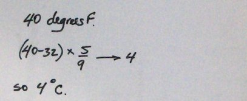

We can't instruct the computer to do something unles we know how to do it first. So let's begin by doing a temperature conversion by hand.
Here's what I wrote down as I converted 40 degrees Fahrenheit to its Celsius equivalent.

Here's what I did step by step:
I began by writing down the amount to be converted, 40.
Next I subtracted 32 from it.
Then I multiplied the difference by 5/9.
The result was 4, meaning that 40 degrees Fahrenheit is equivalent to 4 degrees Celsius.
The next step is to look at what we did by hand and identify the corresponding computer commands.